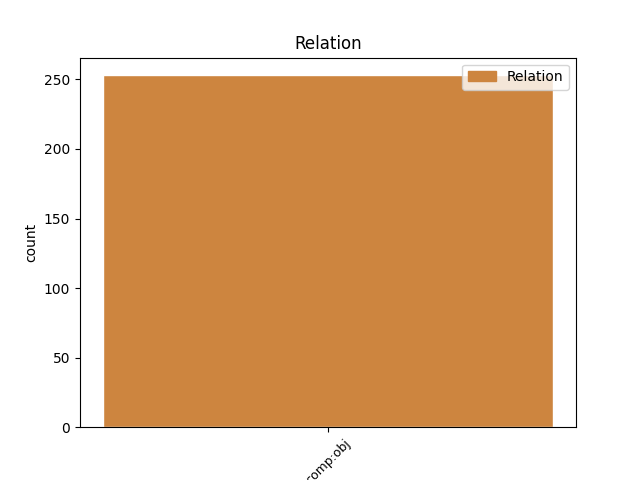
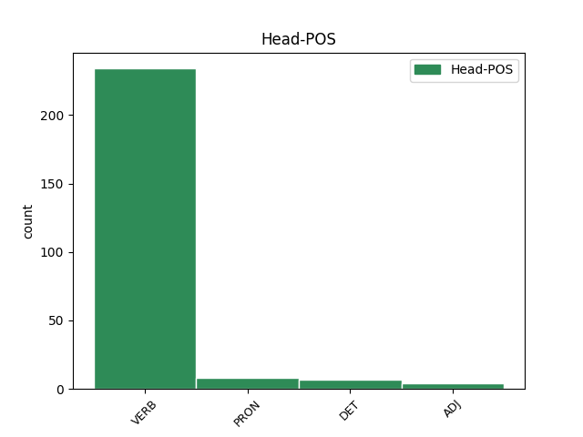
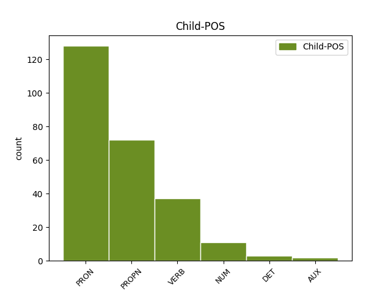

Distribution of features within this leaf



Agreement Rules sorted by frequency.
- When the dependent token is the direct object complements(comp:obj) of the head token, and the dependent token is PRON.
1 За _ _ _ _ 0 _ _ _
2 эту _ _ _ _ 0 _ _ _
3 роль _ _ _ _ 0 _ _ _
4 Финч _ _ _ _ 0 _ _ _
5 был _ _ _ _ 0 _ _ _
6 посмертно _ _ _ _ 0 _ _ _
7 награждён _ _ _ _ 0 _ _ _
8 `` _ _ _ _ 0 _ _ _
9 Оскаром _ _ _ _ 0 _ _ _
10 '' _ _ _ _ 0 _ _ _
11 , _ _ _ _ 0 _ _ _
12 который который PRON AWP Animacy=Anim|Case=Acc|Gender=Masc|Number=Sing 13 comp:obj _ _
13 получила получить VERB VBC Aspect=Perf|Gender=Fem|Mood=Ind|Number=Sing|Tense=Past|VerbForm=Fin|Voice=Act 0 _ _ _
14 его _ _ _ _ 0 _ _ _
15 вдова _ _ _ _ 0 _ _ _
16 Элета _ _ _ _ 0 _ _ _
17 . _ _ _ _ 0 _ _ _
1 9 _ _ _ _ 0 _ _ _
2 июля _ _ _ _ 0 _ _ _
3 1968 _ _ _ _ 0 _ _ _
4 года _ _ _ _ 0 _ _ _
5 , _ _ _ _ 0 _ _ _
6 команда _ _ _ _ 0 _ _ _
7 приобрела приобрести VERB VBC Aspect=Perf|Gender=Fem|Mood=Ind|Number=Sing|Tense=Past|VerbForm=Fin|Voice=Act 0 _ _ _
8 Уилта Уилт PROPN NNP Animacy=Anim|Case=Acc|Gender=Masc|Number=Sing 7 comp:obj _ _
9 Чемберлена _ _ _ _ 0 _ _ _
10 из _ _ _ _ 0 _ _ _
11 `` _ _ _ _ 0 _ _ _
12 Филадельфии _ _ _ _ 0 _ _ _
13 '' _ _ _ _ 0 _ _ _
14 за _ _ _ _ 0 _ _ _
15 Даррелла _ _ _ _ 0 _ _ _
16 Имхоффа _ _ _ _ 0 _ _ _
17 , _ _ _ _ 0 _ _ _
18 Арчи _ _ _ _ 0 _ _ _
19 Кларка _ _ _ _ 0 _ _ _
20 и _ _ _ _ 0 _ _ _
21 Джерри _ _ _ _ 0 _ _ _
22 Чемберса _ _ _ _ 0 _ _ _
23 . _ _ _ _ 0 _ _ _
1 Выступая _ _ _ _ 0 _ _ _
2 с _ _ _ _ 0 _ _ _
3 последним _ _ _ _ 0 _ _ _
4 словом _ _ _ _ 0 _ _ _
5 , _ _ _ _ 0 _ _ _
6 Новрузали _ _ _ _ 0 _ _ _
7 Мамедов _ _ _ _ 0 _ _ _
8 категорически _ _ _ _ 0 _ _ _
9 отверг _ _ _ _ 0 _ _ _
10 обвинения _ _ _ _ 0 _ _ _
11 в _ _ _ _ 0 _ _ _
12 государственной _ _ _ _ 0 _ _ _
13 измене _ _ _ _ 0 _ _ _
14 и _ _ _ _ 0 _ _ _
15 заявил заявить VERB VBC Aspect=Perf|Gender=Masc|Mood=Ind|Number=Sing|Tense=Past|VerbForm=Fin|Voice=Act 0 _ _ _
16 : _ _ _ _ 0 _ _ _
17 `` _ _ _ _ 0 _ _ _
18 Я _ _ _ _ 0 _ _ _
19 прекрасно _ _ _ _ 0 _ _ _
20 понимаю понимать VERB VBC Aspect=Imp|Mood=Ind|Number=Sing|Person=1|Tense=Pres|VerbForm=Fin|Voice=Act 15 comp:obj _ SpaceAfter=No
21 , _ _ _ _ 0 _ _ _
22 что _ _ _ _ 0 _ _ _
23 меня _ _ _ _ 0 _ _ _
24 судят _ _ _ _ 0 _ _ _
25 за _ _ _ _ 0 _ _ _
26 моё _ _ _ _ 0 _ _ _
27 этническое _ _ _ _ 0 _ _ _
28 происхождение _ _ _ _ 0 _ _ _
29 , _ _ _ _ 0 _ _ _
30 за _ _ _ _ 0 _ _ _
31 то _ _ _ _ 0 _ _ _
32 , _ _ _ _ 0 _ _ _
33 что _ _ _ _ 0 _ _ _
34 я _ _ _ _ 0 _ _ _
35 талыш _ _ _ _ 0 _ _ _
36 '' _ _ _ _ 0 _ _ _
37 . _ _ _ _ 0 _ _ _
1 На _ _ _ _ 0 _ _ _
2 участие _ _ _ _ 0 _ _ _
3 в _ _ _ _ 0 _ _ _
4 фильме _ _ _ _ 0 _ _ _
5 `` _ _ _ _ 0 _ _ _
6 Геймер _ _ _ _ 0 _ _ _
7 '' _ _ _ _ 0 _ _ _
8 ( _ _ _ _ 0 _ _ _
9 2009 _ _ _ _ 0 _ _ _
10 ) _ _ _ _ 0 _ _ _
11 он _ _ _ _ 0 _ _ _
12 подписался _ _ _ _ 0 _ _ _
13 только _ _ _ _ 0 _ _ _
14 тогда _ _ _ _ 0 _ _ _
15 , _ _ _ _ 0 _ _ _
16 когда _ _ _ _ 0 _ _ _
17 создатели _ _ _ _ 0 _ _ _
18 убедили _ _ _ _ 0 _ _ _
19 его _ _ _ _ 0 _ _ _
20 , _ _ _ _ 0 _ _ _
21 что _ _ _ _ 0 _ _ _
22 фильм _ _ _ _ 0 _ _ _
23 отражает отражать VERB VBC Aspect=Imp|Mood=Ind|Number=Sing|Person=3|Tense=Pres|VerbForm=Fin|Voice=Act 0 _ _ _
24 один один NUM CD Animacy=Inan|Case=Acc|Gender=Masc|Number=Sing|NumType=Card 23 comp:obj _ _
25 из _ _ _ _ 0 _ _ _
26 возможных _ _ _ _ 0 _ _ _
27 вариантов _ _ _ _ 0 _ _ _
28 недалёкого _ _ _ _ 0 _ _ _
29 будущего _ _ _ _ 0 _ _ _
30 . _ _ _ _ 0 _ _ _
1 Однако _ _ _ _ 0 _ _ _
2 его _ _ _ _ 0 _ _ _
3 мать _ _ _ _ 0 _ _ _
4 сказала сказать VERB VBC Aspect=Perf|Gender=Fem|Mood=Ind|Number=Sing|Tense=Past|VerbForm=Fin|Voice=Act 0 _ _ _
5 : _ _ _ _ 0 _ _ _
6 `` _ _ _ _ 0 _ _ _
7 Мой _ _ _ _ 0 _ _ _
8 сын _ _ _ _ 0 _ _ _
9 никогда _ _ _ _ 0 _ _ _
10 не _ _ _ _ 0 _ _ _
11 будет быть AUX VBC Aspect=Imp|Mood=Ind|Number=Sing|Person=3|Tense=Fut|VerbForm=Fin 4 comp:obj _ _
12 путаться _ _ _ _ 0 _ _ _
13 с _ _ _ _ 0 _ _ _
14 этими _ _ _ _ 0 _ _ _
15 ужасными _ _ _ _ 0 _ _ _
16 людьми _ _ _ _ 0 _ _ _
17 '' _ _ _ _ 0 _ _ _
18 . _ _ _ _ 0 _ _ _
1 Сообщество _ _ _ _ 0 _ _ _
2 Википедии _ _ _ _ 0 _ _ _
3 сформулировало сформулировать VERB VBC Aspect=Perf|Gender=Neut|Mood=Ind|Number=Sing|Tense=Past|VerbForm=Fin|Voice=Act 0 _ _ _
4 это этот DET DT Case=Acc|Gender=Neut|Number=Sing 3 comp:obj _ _
5 как _ _ _ _ 0 _ _ _
6 `` _ _ _ _ 0 _ _ _
7 проверяемость _ _ _ _ 0 _ _ _
8 , _ _ _ _ 0 _ _ _
9 а _ _ _ _ 0 _ _ _
10 не _ _ _ _ 0 _ _ _
11 истина _ _ _ _ 0 _ _ _
12 '' _ _ _ _ 0 _ _ _
13 , _ _ _ _ 0 _ _ _
14 выражая _ _ _ _ 0 _ _ _
15 тем _ _ _ _ 0 _ _ _
16 самым _ _ _ _ 0 _ _ _
17 ту _ _ _ _ 0 _ _ _
18 мысль _ _ _ _ 0 _ _ _
19 , _ _ _ _ 0 _ _ _
20 что _ _ _ _ 0 _ _ _
21 читателям _ _ _ _ 0 _ _ _
22 предоставляется _ _ _ _ 0 _ _ _
23 возможность _ _ _ _ 0 _ _ _
24 самим _ _ _ _ 0 _ _ _
25 проверить _ _ _ _ 0 _ _ _
26 истинность _ _ _ _ 0 _ _ _
27 той _ _ _ _ 0 _ _ _
28 информации _ _ _ _ 0 _ _ _
29 , _ _ _ _ 0 _ _ _
30 которая _ _ _ _ 0 _ _ _
31 представлена _ _ _ _ 0 _ _ _
32 в _ _ _ _ 0 _ _ _
33 статьях _ _ _ _ 0 _ _ _
34 , _ _ _ _ 0 _ _ _
35 и _ _ _ _ 0 _ _ _
36 сделать _ _ _ _ 0 _ _ _
37 свои _ _ _ _ 0 _ _ _
38 собственные _ _ _ _ 0 _ _ _
39 выводы _ _ _ _ 0 _ _ _
40 . _ _ _ _ 0 _ _ _
Disagree Examples:
1 Нас мы PRON PRP Case=Acc|Number=Plur|Person=1 2 comp:obj _ _
2 объединяет объединять VERB VBC Aspect=Imp|Mood=Ind|Number=Sing|Person=3|Tense=Pres|VerbForm=Fin|Voice=Act 0 _ _ _
3 язык _ _ _ _ 0 _ _ _
4 , _ _ _ _ 0 _ _ _
5 традиции _ _ _ _ 0 _ _ _
6 , _ _ _ _ 0 _ _ _
7 радости _ _ _ _ 0 _ _ _
8 и _ _ _ _ 0 _ _ _
9 несчастья _ _ _ _ 0 _ _ _
10 , _ _ _ _ 0 _ _ _
11 через _ _ _ _ 0 _ _ _
12 которые _ _ _ _ 0 _ _ _
13 прошли _ _ _ _ 0 _ _ _
14 румыны _ _ _ _ 0 _ _ _
15 за _ _ _ _ 0 _ _ _
16 последние _ _ _ _ 0 _ _ _
17 века _ _ _ _ 0 _ _ _
18 '' _ _ _ _ 0 _ _ _
19 , _ _ _ _ 0 _ _ _
20 -- _ _ _ _ 0 _ _ _
21 заявил _ _ _ _ 0 _ _ _
22 румынский _ _ _ _ 0 _ _ _
23 президент _ _ _ _ 0 _ _ _
24 В _ _ _ _ 0 _ _ _
25 то _ _ _ _ 0 _ _ _
26 же _ _ _ _ 0 _ _ _
27 время _ _ _ _ 0 _ _ _
28 , _ _ _ _ 0 _ _ _
29 бывший _ _ _ _ 0 _ _ _
30 президент _ _ _ _ 0 _ _ _
31 Молдавии _ _ _ _ 0 _ _ _
32 Владимир _ _ _ _ 0 _ _ _
33 Воронин _ _ _ _ 0 _ _ _
34 ( _ _ _ _ 0 _ _ _
35 ( _ _ _ _ 0 _ _ _
36 2001 _ _ _ _ 0 _ _ _
37 -- _ _ _ _ 0 _ _ _
38 2009 _ _ _ _ 0 _ _ _
39 ) _ _ _ _ 0 _ _ _
40 ) _ _ _ _ 0 _ _ _
41 заявлял _ _ _ _ 0 _ _ _
42 о _ _ _ _ 0 _ _ _
43 своём _ _ _ _ 0 _ _ _
44 категорическом _ _ _ _ 0 _ _ _
45 несогласии _ _ _ _ 0 _ _ _
46 с _ _ _ _ 0 _ _ _
47 этим _ _ _ _ 0 _ _ _
48 и _ _ _ _ 0 _ _ _
49 подчеркивал _ _ _ _ 0 _ _ _
50 , _ _ _ _ 0 _ _ _
51 что _ _ _ _ 0 _ _ _
52 , _ _ _ _ 0 _ _ _
53 по _ _ _ _ 0 _ _ _
54 переписи _ _ _ _ 0 _ _ _
55 2004 _ _ _ _ 0 _ _ _
56 , _ _ _ _ 0 _ _ _
57 `` _ _ _ _ 0 _ _ _
58 94 _ _ _ _ 0 _ _ _
59 % _ _ _ _ 0 _ _ _
60 коренного _ _ _ _ 0 _ _ _
61 населения _ _ _ _ 0 _ _ _
62 Молдавии _ _ _ _ 0 _ _ _
63 считают _ _ _ _ 0 _ _ _
64 себя _ _ _ _ 0 _ _ _
65 молдаванами _ _ _ _ 0 _ _ _
66 , _ _ _ _ 0 _ _ _
67 а _ _ _ _ 0 _ _ _
68 не _ _ _ _ 0 _ _ _
69 румынами _ _ _ _ 0 _ _ _
70 '' _ _ _ _ 0 _ _ _
71 . _ _ _ _ 0 _ _ _
1 Инженеры _ _ _ _ 0 _ _ _
2 DEC _ _ _ _ 0 _ _ _
3 портировали портировать VERB VBC Aspect=Imp|Mood=Ind|Number=Plur|Tense=Past|VerbForm=Fin|Voice=Act 0 _ _ _
4 X6 X6 PROPN NNP Animacy=Inan|Case=Acc|Gender=Masc|Number=Sing 3 comp:obj _ _
5 на _ _ _ _ 0 _ _ _
6 дисплей _ _ _ _ 0 _ _ _
7 QVSS _ _ _ _ 0 _ _ _
8 на _ _ _ _ 0 _ _ _
9 MicroVAX _ _ _ _ 0 _ _ _
10 . _ _ _ _ 0 _ _ _
1 Идеями _ _ _ _ 0 _ _ _
2 противопоставления _ _ _ _ 0 _ _ _
3 света _ _ _ _ 0 _ _ _
4 и _ _ _ _ 0 _ _ _
5 тьмы _ _ _ _ 0 _ _ _
6 изобилуют _ _ _ _ 0 _ _ _
7 многие _ _ _ _ 0 _ _ _
8 оккультные _ _ _ _ 0 _ _ _
9 магические _ _ _ _ 0 _ _ _
10 символы _ _ _ _ 0 _ _ _
11 , _ _ _ _ 0 _ _ _
12 но _ _ _ _ 0 _ _ _
13 суть _ _ _ _ 0 _ _ _
14 у _ _ _ _ 0 _ _ _
15 них _ _ _ _ 0 _ _ _
16 всё _ _ _ _ 0 _ _ _
17 время _ _ _ _ 0 _ _ _
18 одна _ _ _ _ 0 _ _ _
19 : _ _ _ _ 0 _ _ _
20 свет _ _ _ _ 0 _ _ _
21 ( _ _ _ _ 0 _ _ _
22 ян _ _ _ _ 0 _ _ _
23 ) _ _ _ _ 0 _ _ _
24 и _ _ _ _ 0 _ _ _
25 тьма _ _ _ _ 0 _ _ _
26 ( _ _ _ _ 0 _ _ _
27 инь _ _ _ _ 0 _ _ _
28 ) _ _ _ _ 0 _ _ _
29 вечно _ _ _ _ 0 _ _ _
30 возвращаются _ _ _ _ 0 _ _ _
31 , _ _ _ _ 0 _ _ _
32 следуя _ _ _ _ 0 _ _ _
33 друг _ _ _ _ 0 _ _ _
34 за _ _ _ _ 0 _ _ _
35 другом _ _ _ _ 0 _ _ _
36 , _ _ _ _ 0 _ _ _
37 и _ _ _ _ 0 _ _ _
38 порождают порождать VERB VBC Aspect=Imp|Mood=Ind|Number=Plur|Person=3|Tense=Pres|VerbForm=Fin|Voice=Act 0 _ _ _
39 то то PRON DT Animacy=Inan|Case=Acc|Gender=Neut|Number=Sing 38 comp:obj _ SpaceAfter=No
40 , _ _ _ _ 0 _ _ _
41 что _ _ _ _ 0 _ _ _
42 китайцы _ _ _ _ 0 _ _ _
43 называют _ _ _ _ 0 _ _ _
44 `` _ _ _ _ 0 _ _ _
45 Десятью _ _ _ _ 0 _ _ _
46 тысячами _ _ _ _ 0 _ _ _
47 вещей _ _ _ _ 0 _ _ _
48 '' _ _ _ _ 0 _ _ _
49 , _ _ _ _ 0 _ _ _
50 то _ _ _ _ 0 _ _ _
51 есть _ _ _ _ 0 _ _ _
52 мир _ _ _ _ 0 _ _ _
53 сотворённый _ _ _ _ 0 _ _ _
54 . _ _ _ _ 0 _ _ _
1 Идеями _ _ _ _ 0 _ _ _
2 противопоставления _ _ _ _ 0 _ _ _
3 света _ _ _ _ 0 _ _ _
4 и _ _ _ _ 0 _ _ _
5 тьмы _ _ _ _ 0 _ _ _
6 изобилуют _ _ _ _ 0 _ _ _
7 многие _ _ _ _ 0 _ _ _
8 оккультные _ _ _ _ 0 _ _ _
9 магические _ _ _ _ 0 _ _ _
10 символы _ _ _ _ 0 _ _ _
11 , _ _ _ _ 0 _ _ _
12 но _ _ _ _ 0 _ _ _
13 суть _ _ _ _ 0 _ _ _
14 у _ _ _ _ 0 _ _ _
15 них _ _ _ _ 0 _ _ _
16 всё _ _ _ _ 0 _ _ _
17 время _ _ _ _ 0 _ _ _
18 одна _ _ _ _ 0 _ _ _
19 : _ _ _ _ 0 _ _ _
20 свет _ _ _ _ 0 _ _ _
21 ( _ _ _ _ 0 _ _ _
22 ян _ _ _ _ 0 _ _ _
23 ) _ _ _ _ 0 _ _ _
24 и _ _ _ _ 0 _ _ _
25 тьма _ _ _ _ 0 _ _ _
26 ( _ _ _ _ 0 _ _ _
27 инь _ _ _ _ 0 _ _ _
28 ) _ _ _ _ 0 _ _ _
29 вечно _ _ _ _ 0 _ _ _
30 возвращаются _ _ _ _ 0 _ _ _
31 , _ _ _ _ 0 _ _ _
32 следуя _ _ _ _ 0 _ _ _
33 друг _ _ _ _ 0 _ _ _
34 за _ _ _ _ 0 _ _ _
35 другом _ _ _ _ 0 _ _ _
36 , _ _ _ _ 0 _ _ _
37 и _ _ _ _ 0 _ _ _
38 порождают _ _ _ _ 0 _ _ _
39 то _ _ _ _ 0 _ _ _
40 , _ _ _ _ 0 _ _ _
41 что что PRON WP Animacy=Inan|Case=Acc|Gender=Neut|Number=Sing 43 comp:obj _ _
42 китайцы _ _ _ _ 0 _ _ _
43 называют называть VERB VBC Aspect=Imp|Mood=Ind|Number=Plur|Person=3|Tense=Pres|VerbForm=Fin|Voice=Act 0 _ _ _
44 `` _ _ _ _ 0 _ _ _
45 Десятью _ _ _ _ 0 _ _ _
46 тысячами _ _ _ _ 0 _ _ _
47 вещей _ _ _ _ 0 _ _ _
48 '' _ _ _ _ 0 _ _ _
49 , _ _ _ _ 0 _ _ _
50 то _ _ _ _ 0 _ _ _
51 есть _ _ _ _ 0 _ _ _
52 мир _ _ _ _ 0 _ _ _
53 сотворённый _ _ _ _ 0 _ _ _
54 . _ _ _ _ 0 _ _ _
1 В _ _ _ _ 0 _ _ _
2 1861 _ _ _ _ 0 _ _ _
3 году _ _ _ _ 0 _ _ _
4 на _ _ _ _ 0 _ _ _
5 юге _ _ _ _ 0 _ _ _
6 острова _ _ _ _ 0 _ _ _
7 был _ _ _ _ 0 _ _ _
8 построен _ _ _ _ 0 _ _ _
9 маяк _ _ _ _ 0 _ _ _
10 , _ _ _ _ 0 _ _ _
11 который который PRON AWP Animacy=Inan|Case=Acc|Gender=Masc|Number=Sing 12 comp:obj _ _
12 оснастили оснастить VERB VBC Aspect=Perf|Mood=Ind|Number=Plur|Tense=Past|VerbForm=Fin|Voice=Act 0 _ _ _
13 изготовленным _ _ _ _ 0 _ _ _
14 в _ _ _ _ 0 _ _ _
15 Париже _ _ _ _ 0 _ _ _
16 оптическим _ _ _ _ 0 _ _ _
17 аппаратом _ _ _ _ 0 _ _ _
18 системы _ _ _ _ 0 _ _ _
19 Френеля _ _ _ _ 0 _ _ _
20 . _ _ _ _ 0 _ _ _